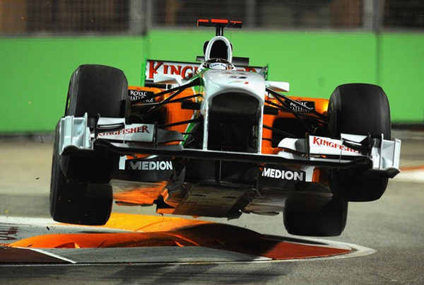

Caracteristicas del Circuito


Caracterisitcas Generales
Como los circuitos de Mónaco y Valencia, estas ciudades y sus calles fueron elegidas para albergar uno de los tantos premios de Fórmula 1. El circuito mide 5,2 kilómetros y tiene 20 curvas, con 12 siendo para la izquierda y 8 siendo para la derecha, la carrera en el sentido contrario a las manecillas del reloj. Se pueden alcanzar altas velocidades en el circuito, en rectas como la de Esplanade Drive o Raffles Boulevard. La pista pasaba (Hasta 2022) por debajo de una de las gradas, creando así un túnel. En este circuito se corren un total de 61 vueltas por carrera, contando con un tiempo de récord de vuelta de 1:36.015 del piloto Lewis Hamilton con el equipo Mercedes en el año 2018.
A lo largo de los años se han realizado diferetes cambios a la pista, algunos ejemplos son:
- 1- En 2013 se hizo una modificación en el circuito, desapareciendo las chicanes (Curvas 10, 10a y 10b), convirtiéndose en una única curva hacia la izquierda de media-alta velocidad terminado en las curvas 11 y 12. Este cambio se ha producido por las quejas de los equipos que decían que era una zona peligrosa 
- 2-Para el año 2023 se removio la parte del "tunel" y de las gradas extra, pasando a ser el circuito de 19 curvas en total, con una longitud total de 4.94 kilómetros.
Fuente bibliográfica: Guillen Rivera Diego Cultura Digital II. México